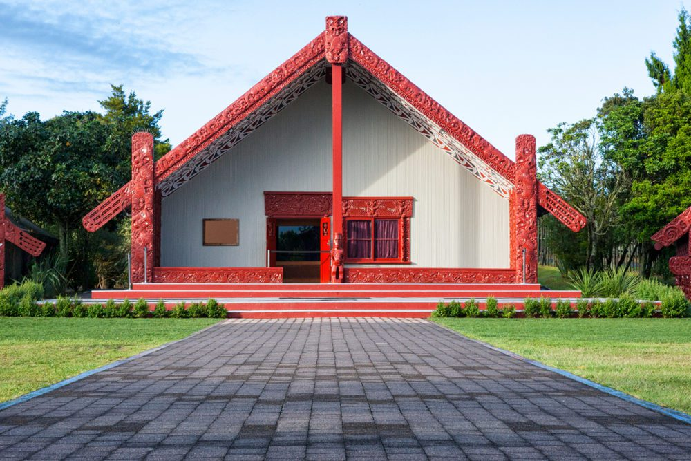

Te Whare Tapa Whā
The Pillars of Te Whare Tapa Whā, and my wellbeing
Te Whare Tapa Whā is a model of the four pillars of wellbeing used to provide a Māori perspective on health. Represented as a wharenui, each wall identifies with an important aspect of health, geared to the lifestyle and values of the Māori:
Taha Tinana - Physical Wellbeing
Taha Tinana refers to your physical health and wellbeing. Looking after your body helps you to feel mentally strong as well. In order to keep myself physically healthy throughout the course, I'm taking daily walks anywhere between 3 - 7 kms in length. I'm recovering from a knee injury which limits what I can do currently as well, but I would like to go swimming at least once a week too. I'm also being careful to keep an eye on my diet and not eat too much crap, and get as much sleep as my four children will allow...
Taha Hinengaro - Emotional and Mental Wellbeing
Taha Hinengaro refers to your mental and emotional health. Despite being fundamentally connected to your physical wellbeing, it's important to take steps to manage mental health too. My current major effort to reduce stress and improve my mental health is moving to NZ to get some family support with the kids! This will hopefully free up a bit more time for walks and guided meditations etc, so I'm hoping the move will be a great catalyst for better mental health all round!
Taha Wairua - Spiritual Wellbeing
Taha Wairua refers broadly to spiritul health. This can manifest as a relgious belief in a higher power, but not necessarily. For some people, myself included, it's simply a reflection of your own way of feeling connected to the universe through your own identity. I'm a nature lover and martial artist, so I find my version of spiritual wellbeing either on the Aikido Mat / Kendo Floor, or wandering through the hills. I'm hoping to find time for plenty of both once we arrive in Christchurch!
Tah Whānau - Familial Wellbeing
Whānau is all about family, colleagues, and people you feel close to in your communities. Relationships with these people play a huge and valued role in your wellbeing. The main reason behind our decision to move back to NZ was so we could be closer to family. Apart from familial ties, I'm planning to reconnect with my Aikido and Kendo whānau in NZ, as it's been many years since we've all trained together! I feel like reconnecting my social circles will help me with both my mental and spiritual health.
Whenua - Land
Whenua is a very important concept in Māori culture, referring to a strong connection to the natural environment as the foundation upon which the other pillars stand. I'm a devout believer in the power of nature for improving health, and have been using Japanese techniques like Shinrin Yoku (forest bathing) for many years. I'll continue to let nature be a key part of my day-to-day moving forward.